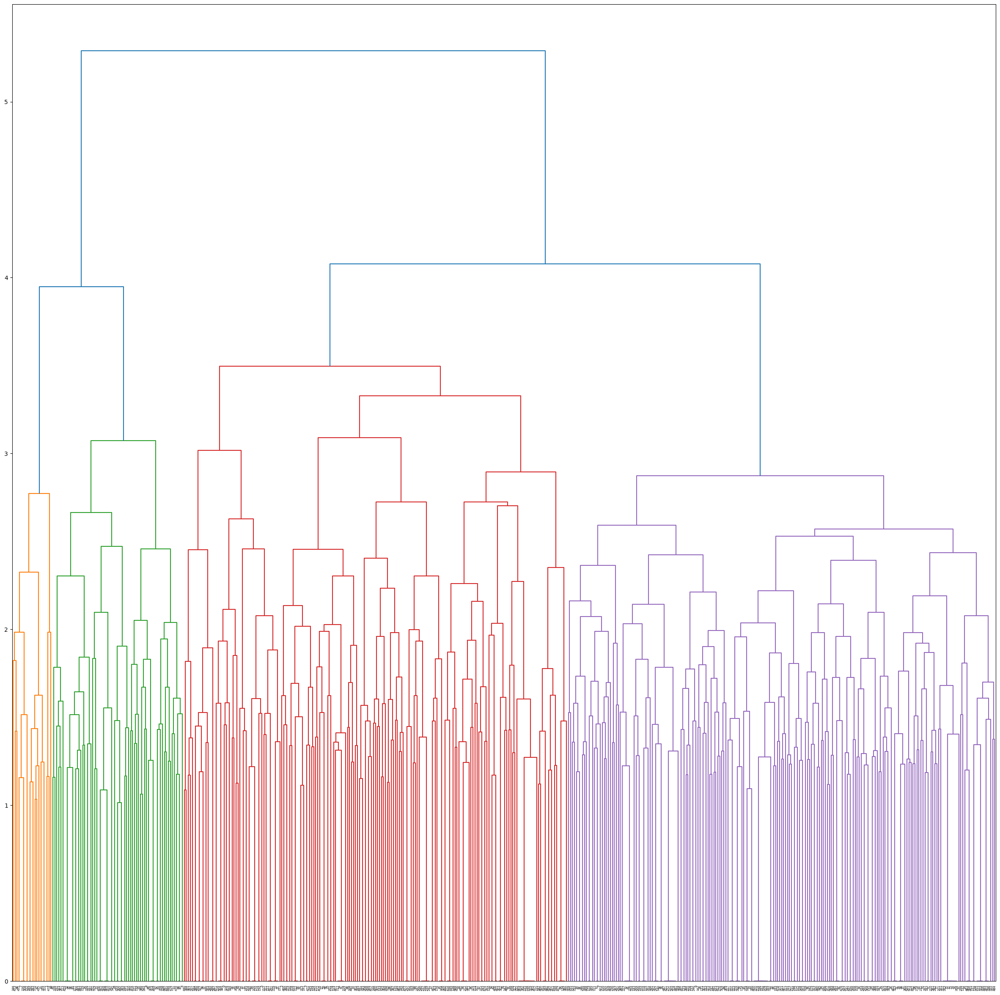
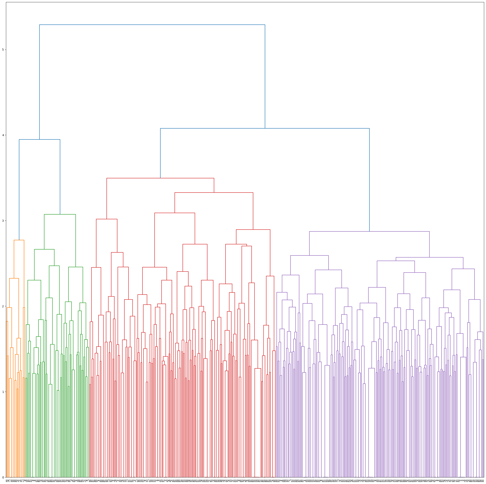

Welcome to the Unsupervised Learning chapter! You chose correctly (don't say that to the Supervised Learning narrator, he gets jealous easily...). Join us as we opt for a more mysterious approach, keeping our data unlabelled and trying to observe patterns, courtesy of the different clustering methods we will use. That means that we can keep pre-defined character tropes on the back-burner for now and, if it all goes swimmingly, we'll find them again at the end of this chapter. Let's dive in!
As we believe that an actor's face is their most determinant feature, we will only focus on the facial landmarks and encodings to obtain the clusters. We will start off with just the facial encodings. Indeed, we wanted to see whether characters, played by their respective actors, will naturally cluster together based on their encodings. As a quick reminder, the facial encodings are a set of 128 measurements processed by the face recognition algorithm that is unique to each individual. As such, it is a much better metric to diffenriate actors between each other than the facial landmarks.
Now let's get down to the nitty gritty and fun details.
We use the Euclidean distance between encodings as a metric of ressemblance between actors, and in consequence characters. Our default threshold that defines whether two faces ressemble each other is 0.6 in terms of euclidean distance. In other words, if the euclidean distance between actors is around 1, the actors do not ressemble each other.
We chose hierarchical clustering as our method for grouping. This entails cluster maps and dendogram functions from the Seaborn Library.
As such, we built out our cluster map based on Euclidean distance, using the "complete" function to define the distance between two clusters.
That means that the distance between cluster u and the cluster v is defined as the maximum distance between a point in u and a point in v.
 

We obtain 4 clusters, yay! What does this mean concretely though, you ask? Good question!
We say that a trope is represented by a cluster when at least 50% of characters of that trope are present in said cluster.


Let us analyse which tropes are composed of which cluster:
- Cluster 1 is the smallest and does not contain a majority of any trope.
- Cluster 2 is particularly interesting, differentiating itself from other clusters as we observe only 3 tropes being majoritarily represented.
- Cluster 3 and 4 contain similar tropes and ressemble each other.
So, of the 16 tropes we identified in our pre-processing step, 13 of them cluster together in a specific cluster. Interesteing stuff, right? Let's zoom in and dive into the inter- and intra-cluster analysis.
As Cluster 1 does not represent any of the tropes, we do not include it in further analysis. This clustering is probably due to the ethnicity of the actors represented in this group, a feature we had to remove from our data analysis.
Cluster 2 represents more than 80% of the shallow_and_popular trope and more than 50% of the emotional_damage and dumb_and_clumsy tropes.
We observe that this Cluster is mainly represented by women.
It seems like these tropes are primarily played by women. Another clue, we're getting closer!
For cluster 3 and 4, we wanted to see if redoing the clustering on these clusters would allow us to further group tropes but no dice. None of the sub-clusters contained any majority of any of the tropes. As such, we keep the clusters 3 and 4 as they are.
Now, we analyse the encodings for each cluster of interest, defined henceforth as C2, C3 and C4.
As such, for example if encoding x is very specific to C2 and differ from other clusters, we decide that this particular encoding can be used to describe people belonging to Cluster 2.
Let us find the most relevant encodings per cluster.
To be able to compare all the encodings, we standardized them using Z-score normalization and we choose robust statistics to describe them i.e their median and median absolute deviation (MAD). Indeed, to find the most relevant encodings per cluster, we searched for the ones:
- which varied less compared to their variation across all the data.
- which are far from the other clusters' values.
- which deviate the most compared to the data mean.
To this end, we computed:
- each encoding's MAD ratio, which is equal to: encoding's MAD intra-cluster/encoding's MAD over the complete data
- each encoding's minimum distance i.e the minimum distance between the median of this encoding for a given cluster and the median of this same encoding for the other clusters
- each encoding's median cluster, plotted against its standardized distribution over the complete data
We can observe this in our scatter plot below. "html plot here"